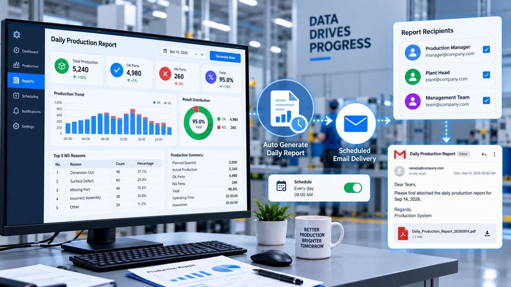

P-03Manufacturing · Plant operations
Production Progress SMS Alerts
Supervisors and maintenance learned about stoppages and missed targets too late — often only at shift end.
P-04 Manufacturing · Production reporting
Daily output, scrap and OEE were logged by hand on paper, taking time and inviting errors.

The requirement
Line output, scrap and downtime were recorded manually on paper every shift — slow, error-prone and hard to analyse.
The application
A scheduled reporting service that runs at the end of each shift, aggregates production, scrap, downtime and station pace from SQL, calculates OEE, and emails multi-tab Excel workbooks and PDF summaries with charts — over authenticated SMTP with a backup relay.
Each step the application handles, in order.
Supervisors and maintenance learned about stoppages and missed targets too late — often only at shift end.
Every Y9T unit needed a fast, consistent final check — with recorded results for each part.
Operators needed a fast inspection station that checks station readiness before inspection.